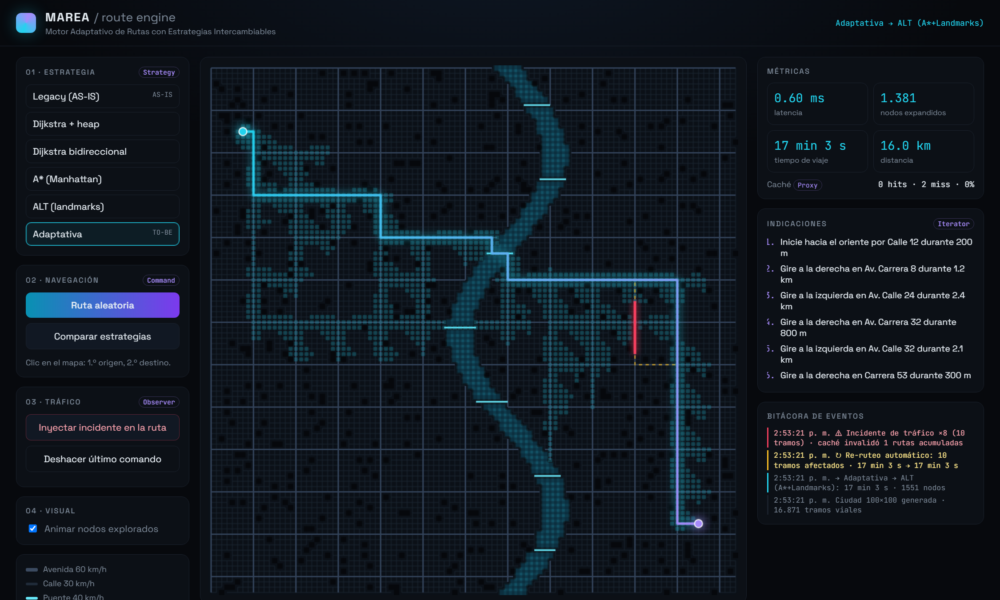

Estrategias de navegación optimizadas para mapas inteligentes
Informe diagnóstico y propuesta de mejora ágil
¿Cómo calcular la ruta más rápida en < 1 ms, escalar con la ciudad y reaccionar al tráfico sin servir rutas obsoletas?
Rutas lentas o desactualizadas → desconfianza del conductor
36.325 nodos explorados por consulta en 200×200
Escalar un algoritmo O(V²) en hora pico es costoso
| # | Hallazgo |
|---|---|
| H1 | Dijkstra O(V²) sin parada temprana |
| H2 | Algoritmo acoplado al controlador |
| H3 | Sin caché ante rutas calientes |
| H4 | Tráfico sin eventos: recarga total |
| H5 | Sin bitácora ni deshacer |
Evaluación con escenarios de calidad (ATAM ligero): eficiencia, escalabilidad, corrección dinámica, modificabilidad.
| Enfoque | Idea | Preproceso | Tráfico dinámico | Decisión |
|---|---|---|---|---|
| Dijkstra + heap | Expande por costo creciente | — | Inmediato | Referencia |
| Bidireccional | Dos frentes se encuentran | — | Inmediato | Incluido |
| A* Manhattan | f = g + h geométrica | — | h admisible | Trayectos cortos |
| ALT | Landmarks + desigualdad triangular | 64 ms | Congestión ≥ 1 | Trayectos largos |
| Contraction Hierarchies | Atajos jerárquicos (OSRM) | minutos | Requiere CCH | Futuro |
findPath()IRouter: el cliente no distingue un hit de un cálculoAlgoritmos intercambiables en ejecución
Registro y ALT compartido
Caché LRU · 88 % aciertos
Invalidación y re-ruteo reactivo
Bitácora + deshacer
Instrucciones giro a giro perezosas
Una sola entrada
Strategy compuesto A*/ALT
Si un tramo se encarece → solo se invalidan las rutas que lo usan (índice arista→ruta).
Si un tramo se abarata → la ruta s→t de costo C se conserva si:
LB = heurística ALT, admisible porque los landmarks usan flujo libre y la congestión solo multiplica por ≥ 1.
Aciertos con 30 incidentes · 0 / 1.000 rutas obsoletas en las tres políticas

Latencia media por solicitud · 1 000 solicitudes Zipf
milisegundos · ciudad 140×140
| Sprint | Incremento | KPI |
|---|---|---|
| S1 | Strategy + heap + A* | ×13 |
| S2 | Proxy LRU + Command | ≥ 80 % hits |
| S3 | Observer + ALT + cotas | 0 obsoletas |
| S4 | Pods sin estado, Redis, stream | escala lineal |
Strangler fig: IRouter envuelve el legado y lo reemplaza pieza por pieza.
El cuello de botella era arquitectónico: desacoplar con Strategy permitió medir, comparar y adaptar.
Los patrones se refuerzan: Proxy + Observer = caché consciente del tráfico.
Mejora verificada: ×100 en latencia media, 96 % menos trabajo y optimalidad intacta.
Las cotas ALT elevan los aciertos bajo tráfico de 43 % a 80 %.
Santiago Chaparro Riaño · Arquitectura de Software
Repositorio · https://github.com/Santiago1481/MAREA
Video · https://youtu.be/uT6hFnQfG98